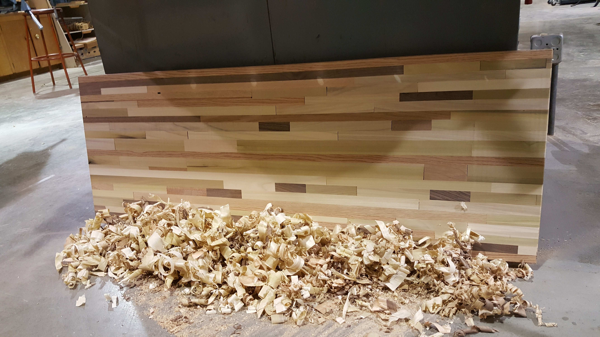

Background
Going into my junior year of high school, I knew I would need an upgraded workspace at which to do the massive amounts of work I knew were going to be assigned. My goals for this project were to keep it cheap, and also to have a modern style aesthetic juxtaposing a wooden tabletop against metal frame. With a tight budget in mind, I decided to construct the tabletop from hardwood scraps and offcuts thrown out by the adult school woodshop class that meets several times a week at our school woodshop. For some reason, despite being on campus, the woodshop is not open to student use. Rather, it is used by the school district for adult woodworking classes that take place after normal school hours. Fortunately, I was able to get friendly with a couple of the instructors, and they graciously let me use their machines and scrap wood to work on my table after school.
Gathering Scrap
As I mentioned, I scrounged through the woodshop's various scrap bins, looking for hardwood pieces at least 1.75" tall by around 0.5" thick. After about half an hour of collecting, I had accumulated the pile shown below, containing a mix of maple, red oak, poplar, walnut, and cherry.
 My collection of scraps, loosely arranged into a tabletop shape.
My collection of scraps, loosely arranged into a tabletop shape.
I arranged the scraps haphazardly at first, but then decided I should have some structure to make the piece more cohesive. So, as you can see in the picture, I used three long strips of red oak to sandwich the rest of the scraps, two on either end and one running down the middle.
My game plan was to glue the pieces up in lengthwise billets, machine those square on three sides, and then glue the billets all together to form the final product. The goal of this was to make the machining and glue up process easier by dividing them into smaller, more manageable chunks.
Glueing the Billets
I started by glueing the smaller pieces to the long red oak strips. I prepped the small pieces for glue up by cutting their mating adges square on the miter saw to minimize any gaps that might form between the pieces. I established a glue up cycle that basically involved:
1. Lay out clamps along the in-progress billet
2. Lay out smaller pieces along the in progress billet
3. Spread thin layer of glue on all pieces
4. Clamp each piece on to form the next layer
5. Wait 30 minutes for glue to set
6. Use electric planer to plane new layer flat
7. Repeat until billet is finished, at a thickness of about 4" across the layers
8. Flatten the bottom of the billet on the jointer
 Glueing the first layer on to the outer red oak strips.
Glueing the first layer on to the outer red oak strips.
 Glueing the second layer on to the outer red oak strips.
Glueing the second layer on to the outer red oak strips.
 The first two billets, built off of the red oak edge pieces .
The first two billets, built off of the red oak edge pieces .
 The first three billets; the two built from the edge strips and now the third central one built off of the central strip.
The first three billets; the two built from the edge strips and now the third central one built off of the central strip.
 All five billets done!
All five billets done!
Finishing the Tabletop
Next, I glued the five billets together into the final tabletop blank. I used biscuits to keep the billets from sliding around too much during the glueing process.
 Glueing the billets together.
Glueing the billets together.
From there, I used a handplane to take down the big pieces that stuck up, and then the woodshop's enormous electric planer to completely flatten the tabletop.
 Handplaning the bulk of the material down.
Handplaning the bulk of the material down.
 Using the giant electric planer to flatten the surface of the tabletop.
Using the giant electric planer to flatten the surface of the tabletop.
 The flattened surface. Looks beautiful.
The flattened surface. Looks beautiful.
I then used a crosscut sled on a table saw to cut the ends square, and used a hand-held router to round over the edges. That completed the woodworking portion of this project.
 The newly squared end after a trip to the table saw.
The newly squared end after a trip to the table saw.
 Rounding over the edges of the table with a hand-held router.
Rounding over the edges of the table with a hand-held router.
 The finished tabletop sitting in the pile of shavings that I handplaned off.
I began making the legs and frame for the table by welding 0.75" angle iron in a rectangle slightly smaller than the table top. I then welded several lengths of 1" steel round tube to the corners, completing the legs. To add rigidity, I welded 0.625" steel round tube between the legs, leaving the front of the table open to accomodate a chair.
 The bare steel frame.
The bare steel frame.
To prevent the table from gouging the floor, I designed some inserts to act as feet in CAD and 3D printed them in PLA, and pressed the feet into the legs.
 Print in progress.
Print in progress.
 The finished feet.
The finished feet.
 A foot pressed into place.
A foot pressed into place.
With the machining finished, I moved on to the finishing process. After sanding the whole tabletop with 220 grit pads, I brushed on several coats of oil based polyurethane, lightly sanding in between coats with 320 grit paper.
 Using the random orbit sander to smooth prep the table for finish.
Using the random orbit sander to smooth prep the table for finish.
 The table after the first coat of polyurethane.
The table after the first coat of polyurethane.
With the tabletop finished, I prepped the frame for spray lacquer, sanding it with 220 grit paper before hitting it with a couple of coats of clear coat.
 Sanded and lacquered.
Sanded and lacquered.
Then it was just a matter of screwing the tabletop down to the frame to be done! It came out great!
 Tabletop attached.
Tabletop attached.
 Done!
Done!
 Turns out to be a great place to build a website too!
Turns out to be a great place to build a website too!